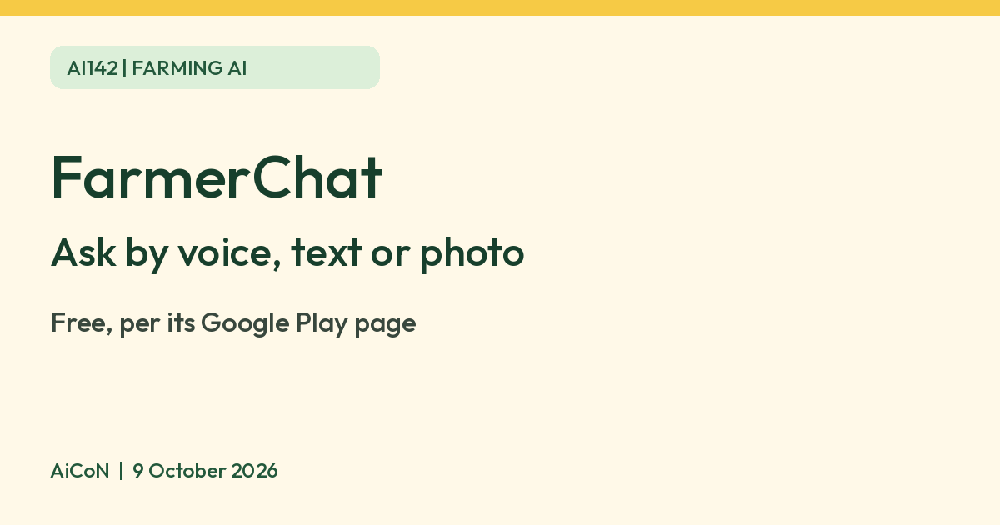

FarmerChat: free AI farming advice by voice, text or photo
The FarmerChat app from Digital Green lets you ask farming questions by voice, text or photo. Its Google Play listing says the advice is free. Check chemical doses and animal illness with a local expert before you act.

What it is
FarmerChat is a farming assistant app from Digital Green, a non-profit. Digital Green's page says people can ask in voice, text or photo and get advice tuned to local soil, crops and climate. Digital Green describes it as an AI-powered assistant. Its Google Play listing says you can ask about crop disease and pests, fertiliser dosage, weather and irrigation, livestock care, and local market prices.
Is it free
Yes. The Google Play listing says FarmerChat is "free farming advice in your language". We found no price or subscription mentioned on Digital Green's page or the listing.
How to try it
- Install FarmerChat from Google Play (the India listing calls it FarmerChat – Kisan Sahayak). The listing is by Digital Green Foundation.
- Ask a question by voice or text, or send a photo of a plant problem.
- Read or listen to the answer.
Limits to know
- We found an Android listing. We did not verify an iPhone app.
- Digital Green says it works "in any language a farmer speaks". The India Play listing advertises 10+ languages and names Hindi, Telugu, Kannada, Marathi and Punjabi, but does not provide a complete language list. We have not tested Malayalam or any language. Check that yours works before you rely on it.
- AI advice can be wrong. For chemicals, doses and animal illness, confirm with a local agriculture officer, a qualified agronomist or a vet before you act.
- The Play listing says the app may share location and audio with third parties. Read its data safety section first.
- We did not test the app ourselves.
Frequently asked questions
Do I need to type?
Digital Green says you can use voice, text or photo.
Is it a government app?
No. The Play listing names Digital Green Foundation as the developer.
Sources: Digital Green, FarmerChat, FarmerChat on Google Play, Digital Green article. Checked 9 October 2026.